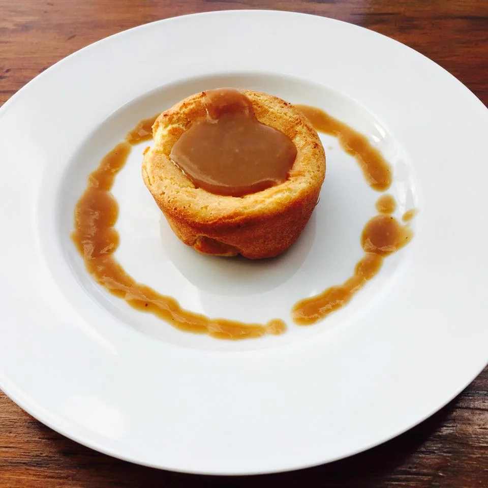

Yorkshire Pudding

Description
Yorkshire pudding is a baked pudding made from a batter of eggs,
flour, and milk or water.[1] A common English side dish,
it is a versatile food that can be served in numerous ways
depending on its ingredients, size, and the accompanying components
of the meal. As a first course, it can be served with onion gravy.
For a main course, it may be served with beef and gravy, and is part
of the traditional Sunday roast, but can also be filled with foods
such as bangers and mash to make a meal. Sausages can be added to make
toad in the hole.
Ingredients
- 3 eggs
- 1 cup milk
- 1 cup all purpose flour
- 2 tablespoons butter
Steps
- Preheat oven to 375 degrees F (190 degrees C).
- In a medium bowl, beat eggs with milk. Stir in flour. Set aside.
- Divide butter evenly into the twelve cups of a muffin tin, about 1/2 teaspoon per cup. Place tin in oven to melt butter, 2 to 5 minutes. Remove tin from oven, and distribute batter evenly among buttery cups.
- Bake in preheated oven 5 minutes. Reduce heat to 350 degrees F (175 degrees C), and bake 25 minutes more or until puffed and golden.